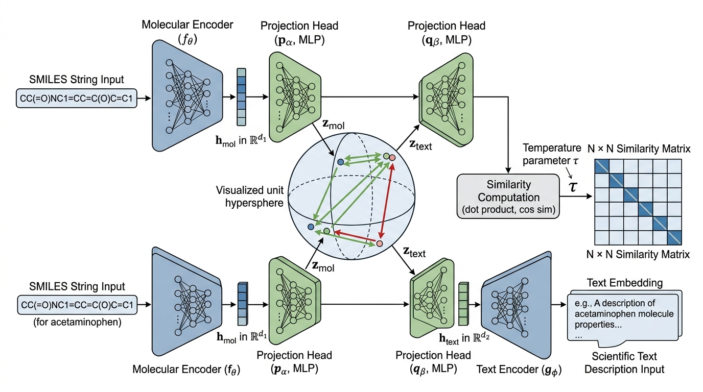

Prerequisites
This section opens the chapter. You should be familiar with embedding spaces and cosine similarity from Chapter 26, where you learned how neural networks project raw data into vector spaces where geometric distance reflects semantic similarity. The concept of foundation model pretraining from Chapter 27 provides the encoder architectures that serve as inputs to the alignment process. Basic PyTorch (tensor operations, loss functions, gradient descent) is assumed.
A molecular encoder maps Simplified Molecular-Input Line-Entry System (SMILES) strings to vectors. A text encoder maps sentences to vectors. Separately, each produces useful representations. But a researcher does not think in separate modalities: they read a paper describing a compound's properties, look at its structure, and connect both to a protein target. Modality alignment trains encoders so that semantically equivalent inputs from different modalities (a molecule and its textual description, a protein and the paragraph explaining its function) land near each other in a shared vector space. This section covers the mathematical machinery that makes alignment work: the InfoNCE contrastive loss, projection heads that bridge dimension mismatches, temperature scaling that controls how "picky" the alignment is, and hard negative mining that forces the model to learn fine-grained distinctions. You will implement alignment from scratch, measure its quality, and understand when it succeeds and when it fails.
1. The Alignment Problem in Scientific AI
What if you could type "inhibits cyclooxygenase and reduces inflammation" into a search bar and retrieve the exact molecular structure of aspirin from a database of millions of compounds, without writing a single chemical query? That capability requires something that no single encoder can provide: a shared mathematical space where molecules and sentences about molecules become directly comparable.
Consider what stands in the way. A molecular encoder \(f_\theta\) takes a molecular graph or SMILES string \(x^{(\text{mol})}\) and produces an embedding \(\mathbf{h}^{(\text{mol})} = f_\theta(x^{(\text{mol})}) \in \mathbb{R}^{d_1}\). A text encoder \(g_\phi\) takes a text description \(x^{(\text{text})}\) and produces \(\mathbf{h}^{(\text{text})} = g_\phi(x^{(\text{text})}) \in \mathbb{R}^{d_2}\). These encoders were typically pretrained independently: \(f_\theta\) on millions of molecules (as in Chapter 27), \(g_\phi\) on scientific text corpora. Their embedding spaces have no natural correspondence. A molecule embedding and its text description's embedding live in entirely different vector spaces with different dimensions, scales, and geometric structure.
Modality alignment trains two (or more) separately pretrained encoders so that their outputs become directly comparable in a single shared vector space. Without alignment, you cannot search for a molecule by describing its properties in English. Nor can you retrieve a textual explanation given a molecular structure; each encoder's output is meaningful only within its own space. The mechanism adds small neural network layers (projection heads) on top of each encoder. A contrastive objective then trains these heads to pull matched pairs together and push unmatched pairs apart. Use modality alignment when you have paired cross-modal data (molecule plus description, protein plus function annotation) and need cross-modal retrieval or reasoning. If your task involves only a single modality (pure text search or molecule-to-molecule similarity), standard single-encoder embeddings are sufficient.
Alignment introduces projection heads \(p_\alpha: \mathbb{R}^{d_1} \to \mathbb{R}^{d}\) and \(q_\beta: \mathbb{R}^{d_2} \to \mathbb{R}^{d}\) that map both modalities into a shared \(d\)-dimensional space. After training, the projected embeddings \(\mathbf{z}^{(\text{mol})} = p_\alpha(f_\theta(x^{(\text{mol})}))\) and \(\mathbf{z}^{(\text{text})} = q_\beta(g_\phi(x^{(\text{text})}))\) satisfy a key property: if the molecule and text are semantically matched (the text describes the molecule), then \(\text{sim}(\mathbf{z}^{(\text{mol})}, \mathbf{z}^{(\text{text})})\) is high. If they are unmatched, the similarity is low. In short: alignment does not translate between modalities; it teaches two encoders to point in the same direction when they are talking about the same thing. Figure 28.1.1 illustrates the dual-encoder modality alignment architecture.

Common Misconception
A common misconception is that alignment makes embeddings from different modalities fully interchangeable, so that a molecule vector and its matching text vector become nearly identical points in the shared space. In reality, Liang et al. (2022) showed that a persistent "modality gap" remains even after thorough alignment training: molecule embeddings and text embeddings cluster in separate regions of the shared space, separated by a consistent offset, and cross-modal cosine similarities are systematically lower than within-modality similarities. Alignment brings matched pairs closer together relative to unmatched pairs, but it does not erase the geometric signature of each modality.
Contrastive Language-Image Pretraining (CLIP; Radford et al., 2021) introduced this paradigm by aligning images and text. The same architecture applies whenever paired cross-modal data exists: molecule-description pairs from PubChem, protein-function pairs from UniProt, image-caption pairs from scientific papers. The alignment objective is agnostic to the modalities; it requires only that paired examples be similar and unpaired examples be dissimilar.
Think of modality alignment as building a bilingual dictionary between two languages that have no cognates. Before alignment, "aspirin" in molecule-space and "a nonsteroidal anti-inflammatory drug" in text-space are unrelated points. After alignment, they are neighbors. The contrastive loss is the language teacher that shows the model thousands of translation pairs ("this molecule goes with this description") and forces it to generalize to unseen pairs. The quality of the resulting dictionary depends entirely on the diversity and accuracy of the training pairs.
Figure 28.1 illustrates the dual-encoder alignment architecture. Two pretrained encoders produce modality-specific embeddings, which projection heads then map into a shared vector space. The InfoNCE contrastive loss trains the projection heads (and optionally fine-tunes the encoders) so that matched pairs converge while unmatched pairs repel.
2. The InfoNCE Contrastive Loss
Without a principled training objective, projection heads learn arbitrary mappings that look aligned on training pairs but crumble on unseen molecules or descriptions. The loss function must do more than bring matched pairs closer; it must actively punish the model for confusing any molecule with any non-matching description in a large candidate pool, because real retrieval searches millions of candidates, not a handful.
The workhorse of modality alignment is the InfoNCE (Information Noise Contrastive Estimation) loss, introduced by van den Oord et al. (2018) and popularized by CLIP. Given a batch of \(N\) paired examples \(\{(x^{(\text{mol})}_i, x^{(\text{text})}_i)\}_{i=1}^{N}\), compute the projected embeddings \(\mathbf{z}^{(\text{mol})}_i\) and \(\mathbf{z}^{(\text{text})}_i\) for all \(i\). The loss treats the matching pair \((i, i)\) as the positive and all \(N-1\) non-matching pairs \((i, j)\) for \(j \neq i\) as negatives.
Define the similarity between the \(i\)-th molecule and the \(j\)-th text as:
$$s_{ij} = \frac{\mathbf{z}^{(\text{mol})}_i \cdot \mathbf{z}^{(\text{text})}_j}{\|\mathbf{z}^{(\text{mol})}_i\| \, \|\mathbf{z}^{(\text{text})}_j\|} \cdot \frac{1}{\tau}$$where \(\tau > 0\) is a learnable temperature parameter. The molecule-to-text loss for sample \(i\) is a softmax cross-entropy over the similarity scores:
$$\mathcal{L}^{(\text{mol} \to \text{text})}_i = -\log \frac{\exp(s_{ii})}{\sum_{j=1}^{N} \exp(s_{ij})}$$Symmetrically, the text-to-molecule loss treats row \(i\) of the transposed similarity matrix:
$$\mathcal{L}^{(\text{text} \to \text{mol})}_i = -\log \frac{\exp(s_{ii})}{\sum_{j=1}^{N} \exp(s_{ji})}$$The total InfoNCE loss averages both directions:
$$\mathcal{L}_{\text{InfoNCE}} = \frac{1}{2N} \sum_{i=1}^{N} \left( \mathcal{L}^{(\text{mol} \to \text{text})}_i + \mathcal{L}^{(\text{text} \to \text{mol})}_i \right)$$Minimizing this loss forces the model to solve an \(N\)-way classification problem: given molecule \(i\), identify its matching text among \(N\) candidates (and vice versa). As \(N\) grows, the problem becomes harder and the representations must become more discriminative. This is why large batch sizes are typically important for contrastive learning; CLIP used batches of 32,768 pairs.
import torch
import torch.nn as nn
import torch.nn.functional as F
class InfoNCELoss(nn.Module):
"""
Symmetric InfoNCE contrastive loss for cross-modal alignment.
Given projected embeddings from two modalities, computes the
bidirectional contrastive loss with learnable temperature.
"""
def __init__(self, initial_temperature: float = 0.07):
super().__init__()
# Log-temperature is learnable; exp ensures tau > 0
self.log_temperature = nn.Parameter(
torch.log(torch.tensor(initial_temperature))
)
def forward(
self,
z_a: torch.Tensor, # (batch, dim) from modality A
z_b: torch.Tensor, # (batch, dim) from modality B
) -> torch.Tensor:
# L2-normalize embeddings to unit sphere
z_a = F.normalize(z_a, dim=-1)
z_b = F.normalize(z_b, dim=-1)
# Cosine similarity matrix scaled by temperature
temperature = self.log_temperature.exp()
logits = z_a @ z_b.T / temperature # (N, N)
# Labels: diagonal entries are positive pairs
labels = torch.arange(len(z_a), device=z_a.device)
# Symmetric cross-entropy
loss_a_to_b = F.cross_entropy(logits, labels)
loss_b_to_a = F.cross_entropy(logits.T, labels)
return (loss_a_to_b + loss_b_to_a) / 2
Step-Through: InfoNCE Loss on a Batch of 4 Pairs
Trace through the InfoNCE computation with \(N = 4\) paired embeddings (already L2-normalized) and temperature \(\tau = 0.5\). Suppose the cosine similarity matrix \(S\) (molecule row, text column) is:
\(S = \begin{pmatrix} 0.9 & 0.3 & 0.1 & 0.2 \\ 0.2 & 0.8 & 0.4 & 0.1 \\ 0.0 & 0.3 & 0.7 & 0.5 \\ 0.1 & 0.0 & 0.2 & 0.85 \end{pmatrix}\)
Step 1: Scale by temperature. Divide every entry by \(\tau = 0.5\): the diagonal (positive pairs) becomes \([1.8, 1.6, 1.4, 1.7]\) and off-diagonal entries double as well (e.g., \(S_{01} = 0.3 \to 0.6\)).
Step 2: Row-wise softmax for molecule-to-text direction. For molecule 0: \(\exp(1.8) / (\exp(1.8) + \exp(0.6) + \exp(0.2) + \exp(0.4)) = 6.05 / (6.05 + 1.82 + 1.22 + 1.49) = 6.05 / 10.58 \approx 0.572\). Loss for pair 0: \(-\ln(0.572) \approx 0.558\).
Step 3: Repeat for all rows, then repeat on the transposed matrix for the text-to-molecule direction. The per-pair losses in each direction are averaged, then both directions are averaged. Final loss \(\approx 0.61\). Notice that molecule 2 has the highest individual loss (\(\approx 0.89\)) because its positive similarity (0.7) is closest to its hardest negative (0.5), making that pair harder to discriminate.
The InfoNCE loss defines what the model should optimize, but it says nothing about how embeddings from encoders with different architectures and dimensionalities arrive in a single shared space; that is the job of projection heads.
3. Projection Heads and Encoder Freezing
The projection heads \(p_\alpha\) and \(q_\beta\) are typically small multilayer perceptrons (MLPs) (two to three linear layers with ReLU or GELU activation, where GELU (Gaussian Error Linear Unit) is a smooth approximation of ReLU that weights inputs by their magnitude) that map encoder outputs to the shared space. Each encoder's forward pass produces a sequence of hidden states; the projection head takes a single pooled vector from that sequence (typically the CLS token, the first position's hidden state that transformer encoders learn to use as a whole-sequence summary) and maps it to the shared dimension. Their design involves several non-obvious choices.
Dimension of the shared space. CLIP uses \(d = 512\). Scientific multimodal models typically use \(d \in [256, 768]\). Larger \(d\) preserves more information but requires more data to fill the space usefully. Smaller \(d\) forces compression, which can improve generalization if the alignment signal is simple (e.g., matching a molecule to its name) but hurts if the relationship is nuanced (e.g., matching a molecule to a paragraph describing its mechanism of action).
Encoder freezing strategy. When the backbone encoders (\(f_\theta\) for molecules, \(g_\phi\) for text) are large pretrained models, you face a choice: freeze them and train only the projection heads, or fine-tune everything end-to-end. The tradeoffs parallel those in transfer learning (see Chapter 27). Freezing is computationally cheap and preserves the encoder's pretrained knowledge, but the projection heads alone may lack the capacity to bridge large representational gaps. End-to-end fine-tuning is more expressive but risks catastrophic forgetting, where the encoder loses its pretrained capabilities. A common compromise is staged training: freeze encoders for the first few epochs to warm up the projection heads, then unfreeze with a low learning rate.
import torch.nn as nn
from transformers import AutoModel, AutoTokenizer
class ProjectionHead(nn.Module):
"""
Two-layer MLP projection head with layer normalization.
Maps encoder hidden states to a shared embedding space
for contrastive alignment.
"""
def __init__(self, input_dim: int, projection_dim: int = 512):
super().__init__()
self.net = nn.Sequential(
nn.Linear(input_dim, input_dim),
nn.GELU(),
nn.LayerNorm(input_dim),
nn.Linear(input_dim, projection_dim),
)
def forward(self, x: torch.Tensor) -> torch.Tensor:
return self.net(x)
class DualEncoderAligner(nn.Module):
"""
Aligns two pretrained encoders via projection heads
and InfoNCE contrastive loss.
Parameters
----------
encoder_a_name : str
Hugging Face model name for modality A (e.g., molecular encoder).
encoder_b_name : str
Hugging Face model name for modality B (e.g., text encoder).
projection_dim : int
Dimension of the shared alignment space.
freeze_encoders : bool
If True, only projection heads are trained.
"""
def __init__(
self,
encoder_a_name: str,
encoder_b_name: str,
projection_dim: int = 512,
freeze_encoders: bool = True,
):
super().__init__()
self.encoder_a = AutoModel.from_pretrained(encoder_a_name)
self.encoder_b = AutoModel.from_pretrained(encoder_b_name)
dim_a = self.encoder_a.config.hidden_size
dim_b = self.encoder_b.config.hidden_size
self.proj_a = ProjectionHead(dim_a, projection_dim)
self.proj_b = ProjectionHead(dim_b, projection_dim)
self.loss_fn = InfoNCELoss()
if freeze_encoders:
for param in self.encoder_a.parameters():
param.requires_grad = False
for param in self.encoder_b.parameters():
param.requires_grad = False
def encode_a(self, **inputs) -> torch.Tensor:
"""Encode modality A inputs and project to shared space."""
hidden = self.encoder_a(**inputs).last_hidden_state
pooled = hidden[:, 0, :] # CLS token pooling
return self.proj_a(pooled)
def encode_b(self, **inputs) -> torch.Tensor:
"""Encode modality B inputs and project to shared space."""
hidden = self.encoder_b(**inputs).last_hidden_state
pooled = hidden[:, 0, :]
return self.proj_b(pooled)
def forward(self, inputs_a: dict, inputs_b: dict) -> torch.Tensor:
"""Compute alignment loss for a batch of paired inputs."""
z_a = self.encode_a(**inputs_a)
z_b = self.encode_b(**inputs_b)
return self.loss_fn(z_a, z_b)
freeze_encoders flag controls whether the backbone parameters are updated during alignment training.4. Temperature Scaling and Its Effects
The temperature parameter \(\tau\) in the InfoNCE loss controls the sharpness of the softmax distribution over similarity scores. Its effect is both subtle and critical.
Low temperature (\(\tau \to 0\)) makes the softmax sharper: it assigns nearly all probability mass to the highest-similarity candidate. This forces the model to produce very distinct embeddings for non-matching pairs, which is good for retrieval precision but can lead to training instability (gradients become very large for hard negatives) and mode collapse, a degenerate state in which the model maps all inputs to the same region of the embedding space, erasing discriminative structure (the model pushes all negatives to exactly the same point).
High temperature (\(\tau \to \infty\)) makes the softmax uniform: every candidate gets similar probability regardless of actual similarity. This provides smooth gradients but weak learning signal; the model learns slowly and may converge to a suboptimal alignment.
Mental Model
Think of temperature as the zoom level on a grading rubric. A strict teacher (low temperature) grades on a razor-thin curve: the top student gets an A and everyone else fails, even if their scores differ by fractions of a point. This forces students to find every possible edge, but a single bad test question can flip the rankings unpredictably. A lenient teacher (high temperature) gives everyone a B regardless of performance; nobody fails, but nobody is motivated to improve either. A good teacher (learned temperature) starts lenient while students are still learning the basics, then gradually tightens the curve as the class improves. The contrastive loss does exactly this: the learnable \(\tau\) adjusts the grading sharpness so that the model faces appropriately challenging discrimination at each stage of training.
CLIP initializes \(\tau = 0.07\) and learns it jointly with the model parameters. In practice, most scientific multimodal models follow this convention. The learned temperature typically converges to the range \([0.01, 0.1]\), depending on batch size and embedding dimension. A useful diagnostic: if \(\tau\) collapses to a very small value during training, the model is likely overfitting to easy negatives and needs harder ones.
A pharmaceutical company trains a molecule-text alignment model for drug repurposing. With \(\tau = 0.07\) (the CLIP default), the model achieves 72% recall@10 on a molecule-to-description retrieval benchmark. Fixing \(\tau = 0.5\) drops recall to 54% because the softmax is too flat to discriminate between similar molecules. Fixing \(\tau = 0.01\) achieves 75% recall@10 but causes training loss to spike and become unstable after epoch 5. Making \(\tau\) learnable with initialization at 0.07 yields the best result: 78% recall@10 with stable training, a 24-percentage-point swing over the flat-temperature baseline, driven entirely by a single learned scalar, as the model automatically sharpens the distribution as it learns finer distinctions.
Temperature controls how sharply the model discriminates among candidates, but discrimination is only as useful as the candidates themselves; if every negative in the batch is trivially different from the positive, even a well-tuned temperature cannot force the model to learn fine-grained distinctions.
5. Hard Negative Mining
Not all negative pairs are equally informative. A molecule for aspirin and a text describing a steel alloy are trivially distinguishable; the model learns nothing from pushing them apart. A molecule for aspirin and a text describing ibuprofen (another nonsteroidal anti-inflammatory drug, or NSAID, with similar properties) is a hard negative: the descriptions overlap significantly, and the model must learn subtle structural differences to distinguish them. Hard negatives drive the most learning.
In-batch negatives (the standard InfoNCE setup) provide some hard negatives by chance, but their difficulty depends on the batch composition. Several strategies increase the proportion of hard negatives:
- Pre-computed similarity mining. Before training, compute pairwise similarities across the dataset using the initial (pretrained) encoders. Construct batches where each positive pair is accompanied by its \(k\) nearest non-matching neighbors. This requires an offline index (Facebook AI Similarity Search (FAISS) or Scalable Nearest Neighbors (ScaNN); see Chapter 37) but dramatically improves alignment quality.
- Cross-batch memory banks. Maintain a queue of recent embeddings from previous batches. Each sample's negatives include not just the current batch but also the queue, effectively increasing the number of negatives without increasing batch size. Momentum Contrast (MoCo; He et al., 2020) popularized this approach.
- Curriculum-based hardness. Start training with easy negatives (random batches) and progressively increase hardness as the model improves. This avoids the instability that pure hard-negative mining can cause in early training.
import numpy as np
from dataclasses import dataclass
@dataclass
class HardNegativeBatchSampler:
"""
Constructs batches with guaranteed hard negatives.
For each anchor, includes its k nearest non-matching
samples (by pre-computed embedding similarity) plus
random negatives to fill the batch.
Parameters
----------
similarity_matrix : np.ndarray
Pre-computed pairwise similarity, shape (N, N).
k_hard : int
Number of hard negatives per anchor.
batch_size : int
Total batch size (must be > k_hard + 1).
"""
similarity_matrix: np.ndarray
k_hard: int = 4
batch_size: int = 32
def __post_init__(self):
n = len(self.similarity_matrix)
# For each sample, rank others by similarity (descending)
# Exclude self (diagonal)
self.hard_negative_indices = np.zeros(
(n, self.k_hard), dtype=np.int64
)
for i in range(n):
sims = self.similarity_matrix[i].copy()
sims[i] = -np.inf # exclude self
# Top-k most similar non-matching items
top_k = np.argpartition(sims, -self.k_hard)[-self.k_hard:]
self.hard_negative_indices[i] = top_k
def sample_batch(self, anchor_idx: int) -> list[int]:
"""Build a batch around an anchor with hard negatives."""
batch = {anchor_idx}
# Add hard negatives
for neg_idx in self.hard_negative_indices[anchor_idx]:
batch.add(int(neg_idx))
# Fill remaining slots with random samples
n = len(self.similarity_matrix)
while len(batch) < self.batch_size:
rand_idx = np.random.randint(0, n)
batch.add(rand_idx)
return list(batch)[:self.batch_size]
k_hard parameter controls how many guaranteed hard negatives appear per batch.The from-scratch alignment framework above is roughly 120 lines. The open_clip library provides the same capability (dual encoders, InfoNCE loss, temperature scheduling, distributed training) in about 15 lines of configuration:
# Using open_clip for contrastive alignment (15 lines vs 120)
import open_clip
model, preprocess_train, preprocess_val = open_clip.create_model_and_transforms(
"ViT-B-32", # or a custom architecture
pretrained="laion2b_s34b_b79k", # as of 2024, DataComp-trained checkpoints (e.g., "datacomp_xl_s13b_b90k") are preferred for new projects
)
tokenizer = open_clip.get_tokenizer("ViT-B-32")
# The library handles InfoNCE loss, temperature learning,
# gradient accumulation, and distributed training internally.
# Fine-tune on your domain pairs:
# open_clip.training.main(args) # full training loop
open_clip, which encapsulates dual encoders, InfoNCE loss, and temperature scheduling in a single high-level API call.The library reduces 120 lines to 15 by handling loss computation, temperature scheduling, mixed-precision training, and multi-GPU distribution internally. Use the from-scratch version when you need custom loss terms (e.g., adding a reconstruction loss alongside contrastive alignment); use open_clip when you want a production-grade training pipeline for CLIP-style models.
6. Alignment Quality Metrics
Training a contrastive model is meaningless without measuring whether the alignment actually works. The standard metrics evaluate cross-modal retrieval: given a query in modality A, how well can you retrieve the correct match from modality B?
Recall@k measures the fraction of queries for which the correct match appears in the top \(k\) retrieved results:
$$\text{Recall@}k = \frac{1}{N} \sum_{i=1}^{N} \mathbb{1}\left[\text{rank}_i \leq k\right]$$where \(\text{rank}_i\) is the position of the true match for query \(i\) in the sorted list of candidates. Recall@1 is the most stringent (exact match at the top); Recall@10 is more lenient and commonly reported for scientific retrieval.
Mean Reciprocal Rank (MRR) gives credit to correct matches at any position, weighted by rank:
$$\text{MRR} = \frac{1}{N} \sum_{i=1}^{N} \frac{1}{\text{rank}_i}$$Checkpoint
So far: Recall@k asks "is the correct match in the top \(k\) results?" while MRR rewards matches that appear higher in the ranked list; together they measure retrieval success, but neither tells you how the embedding space itself is shaped, which is what the next two metrics address.
Alignment score (also called cross-modal cosine similarity) directly measures how close matched pairs are in the shared space. For a test set of \(M\) matched pairs:
$$\text{AlignScore} = \frac{1}{M} \sum_{i=1}^{M} \frac{\mathbf{z}^{(A)}_i \cdot \mathbf{z}^{(B)}_i}{\|\mathbf{z}^{(A)}_i\| \, \|\mathbf{z}^{(B)}_i\|}$$A complementary metric is uniformity, which measures whether embeddings are spread evenly across the unit hypersphere (the surface of a sphere in \(d\)-dimensional space where every point has norm 1, which is where L2-normalized embeddings live) rather than collapsing to a small region. Good alignment requires both high alignment score (matched pairs are close) and high uniformity (unmatched pairs are spread out). Wang and Isola (2020) formalized this as the alignment-uniformity tradeoff.
import torch
import torch.nn.functional as F
from dataclasses import dataclass
@dataclass
class AlignmentMetrics:
"""
Computes standard cross-modal alignment quality metrics.
Parameters
----------
z_a : torch.Tensor
Projected embeddings from modality A, shape (N, d).
z_b : torch.Tensor
Projected embeddings from modality B, shape (N, d).
Row i of z_b is the ground-truth match for row i of z_a.
"""
z_a: torch.Tensor
z_b: torch.Tensor
def __post_init__(self):
self.z_a = F.normalize(self.z_a, dim=-1)
self.z_b = F.normalize(self.z_b, dim=-1)
# Full similarity matrix: (N, N)
self.sim_matrix = self.z_a @ self.z_b.T
def recall_at_k(self, k: int = 10, direction: str = "a_to_b") -> float:
"""
Fraction of queries where the true match is in the top-k.
Parameters
----------
k : int
Number of top candidates to consider.
direction : str
"a_to_b" retrieves B given A; "b_to_a" retrieves A given B.
"""
if direction == "a_to_b":
sims = self.sim_matrix
else:
sims = self.sim_matrix.T
n = sims.shape[0]
# Get top-k indices for each query
_, top_k_indices = sims.topk(k, dim=1)
# True match for query i is index i
targets = torch.arange(n, device=sims.device).unsqueeze(1)
hits = (top_k_indices == targets).any(dim=1).float()
return hits.mean().item()
def mean_reciprocal_rank(self, direction: str = "a_to_b") -> float:
"""Average of 1/rank for the true match across all queries."""
sims = self.sim_matrix if direction == "a_to_b" else self.sim_matrix.T
n = sims.shape[0]
# Rank of the true match (diagonal element)
ranks = (sims >= sims.diag().unsqueeze(1)).sum(dim=1).float()
return (1.0 / ranks).mean().item()
def alignment_score(self) -> float:
"""Mean cosine similarity between matched pairs."""
return self.sim_matrix.diag().mean().item()
def uniformity(self, t: float = 2.0) -> float:
"""
Uniformity loss (Wang & Isola, 2020).
Lower is better (more uniform distribution on hypersphere).
"""
sq_dists = torch.cdist(self.z_a, self.z_a, p=2).pow(2)
return sq_dists.mul(-t).exp().mean().log().item()
def report(self) -> dict:
"""Compute all standard metrics."""
return {
"recall@1_a2b": self.recall_at_k(1, "a_to_b"),
"recall@5_a2b": self.recall_at_k(5, "a_to_b"),
"recall@10_a2b": self.recall_at_k(10, "a_to_b"),
"recall@1_b2a": self.recall_at_k(1, "b_to_a"),
"recall@5_b2a": self.recall_at_k(5, "b_to_a"),
"recall@10_b2a": self.recall_at_k(10, "b_to_a"),
"mrr_a2b": self.mean_reciprocal_rank("a_to_b"),
"mrr_b2a": self.mean_reciprocal_rank("b_to_a"),
"alignment": self.alignment_score(),
"uniformity": self.uniformity(),
}
report method returns all standard metrics in both retrieval directions, providing a comprehensive view of alignment quality.A model can achieve a perfect alignment score (all matched pairs at cosine similarity 1.0) by mapping every input to the same point, but this destroys all discriminative information. Uniformity measures the complementary requirement: the embeddings should spread across the hypersphere so that different concepts occupy different regions. The best models achieve both high alignment and high uniformity. When debugging a poorly performing alignment model, always check both metrics: high alignment but low uniformity indicates mode collapse; high uniformity but low alignment indicates that the contrastive signal is too weak (batch too small or temperature too high).
These metrics tell you how well alignment is working, but they also reveal when it is not; persistent low recall or collapsing uniformity are symptoms of specific, diagnosable failure modes.
When alignment succeeds. A well-aligned model shows three convergent signals during training: recall@10 climbs steadily across epochs (indicating that the correct match is consistently ranked near the top), alignment score increases without uniformity collapsing (indicating that matched pairs move closer without all embeddings collapsing to a single region), and the learned temperature \(\tau\) stabilizes rather than drifting toward zero or diverging. In downstream scientific applications, success means that free-text queries retrieve semantically correct molecules, proteins, or images from large candidate pools, enabling discovery workflows that would otherwise require hand-crafted domain-specific queries.
7. When Alignment Fails
Modality alignment is not guaranteed to work. Understanding the failure modes helps you diagnose and fix problems in practice.
Three Common Failure Modes
Modality gap. Even after alignment training, Liang et al. (2022) showed that CLIP-style models exhibit a persistent "modality gap": embeddings from different modalities occupy different regions of the shared space, separated by a constant offset. This gap means that cross-modal similarity scores are systematically lower than intra-modal scores, which can bias retrieval toward same-modality results if not accounted for.
Semantic granularity mismatch. A molecular structure encodes precise atomic connectivity, while a text description may operate at a coarse functional level ("anti-inflammatory agent"). Aligning these modalities at the wrong granularity leads to a space where similar descriptions map to dissimilar molecules. The solution is hierarchical alignment: separate losses for coarse-grained (drug class) and fine-grained (specific structure) matching.
Data quality. Contrastive alignment is only as good as the paired data. If the molecule-text pairs are noisy (the text describes the wrong molecule, or the description is too generic to be discriminative), the learned alignment will be noisy too. PubChem descriptions, the most commonly used source, vary enormously in specificity: some are detailed mechanistic descriptions, others are just "a chemical compound." Filtering for description quality before training is strongly recommended, because generic or incorrect descriptions introduce noise that the contrastive loss cannot distinguish from genuine semantic relationships.
Most current multimodal scientific models align two modalities at a time (molecule-text, protein-text, image-text). The frontier is many-to-many alignment: a single shared space that simultaneously embeds molecules, proteins, text descriptions, experimental images, gene expression profiles, and clinical outcomes. ImageBind (Girdhar et al., 2023) demonstrated this for six modalities using a "bind" architecture where all modalities align to images as an anchor. More recently, BioMedCLIP (Zhang et al., 2025, Nature Medicine) trained on over 15 million figure-caption pairs from PubMed Central and showed that domain-specific contrastive pretraining on biomedical literature substantially outperforms general-purpose CLIP on medical image classification, cross-modal retrieval, and visual question answering tasks. BioMedCLIP's key contribution is demonstrating that curating high-quality, domain-matched paired data matters more than scaling model size for scientific alignment. Parallel efforts such as MolBind (2024) extend the bind paradigm to chemistry by anchoring molecules, spectra, and textual descriptions in a single space. The key challenge remains alignment dilution: as more modalities are added, the shared space must accommodate increasingly diverse relationships, and per-modality retrieval quality can degrade unless training data is carefully balanced across all modality combinations.
Real-World Application: Drug Repurposing with MoleculeSTM
MoleculeSTM (Liu et al., 2023) aligns molecular graphs with biomedical text descriptions using contrastive learning on 281,000 molecule-text pairs from PubChem. Once aligned, researchers query the shared space with natural language (e.g., "binds to ACE2 receptor and inhibits viral entry") to retrieve candidate molecules without writing a single chemical substructure query. In benchmarks, this text-based molecular retrieval identified repurposing candidates for COVID-19 that overlapped with molecules already in clinical trials, demonstrating that modality alignment can replace expert-crafted chemical search rules with free-form scientific language. As of 2024, successors such as MolFM and GIT-Mol extend this paradigm by incorporating 3D conformer information alongside 2D graphs and text, improving retrieval accuracy on structure-sensitive queries.
8. Putting It Together: A Minimal Alignment Training Loop
The following example combines dual encoders, projection heads, InfoNCE loss, and alignment metrics in a complete training loop. It uses a toy dataset of molecule-text pairs but follows the same pattern that MoleculeSTM and similar production models use.
import torch
from torch.utils.data import DataLoader, Dataset
from typing import Iterator
class MoleculeTextDataset(Dataset):
"""
Paired molecule SMILES and text descriptions.
In production, load from PubChem or ChEBI.
This example uses synthetic pairs for illustration.
"""
def __init__(self, pairs: list[tuple[str, str]], tokenizer_a, tokenizer_b):
self.pairs = pairs
self.tok_a = tokenizer_a
self.tok_b = tokenizer_b
def __len__(self) -> int:
return len(self.pairs)
def __getitem__(self, idx: int) -> tuple[dict, dict]:
smiles, text = self.pairs[idx]
inputs_a = self.tok_a(
smiles, return_tensors="pt", padding="max_length",
max_length=128, truncation=True,
)
inputs_b = self.tok_b(
text, return_tensors="pt", padding="max_length",
max_length=256, truncation=True,
)
# Remove batch dim added by tokenizer
return (
{k: v.squeeze(0) for k, v in inputs_a.items()},
{k: v.squeeze(0) for k, v in inputs_b.items()},
)
def train_alignment(
model: "DualEncoderAligner",
train_loader: DataLoader,
val_pairs: tuple[torch.Tensor, torch.Tensor],
epochs: int = 20,
lr: float = 1e-4,
) -> list[dict]:
"""
Train a dual-encoder alignment model and track metrics.
Parameters
----------
model : DualEncoderAligner
The alignment model with encoders and projection heads.
train_loader : DataLoader
Batches of paired (inputs_a, inputs_b) dictionaries.
val_pairs : tuple
Pre-computed (z_a_val, z_b_val) for validation metrics.
epochs : int
Number of training epochs.
lr : float
Learning rate for the optimizer.
"""
optimizer = torch.optim.AdamW(
[p for p in model.parameters() if p.requires_grad],
lr=lr,
weight_decay=0.01,
)
scheduler = torch.optim.lr_scheduler.CosineAnnealingLR(
optimizer, T_max=epochs
)
history = []
for epoch in range(epochs):
model.train()
total_loss = 0.0
for inputs_a, inputs_b in train_loader:
loss = model(inputs_a, inputs_b)
optimizer.zero_grad()
loss.backward()
optimizer.step()
total_loss += loss.item()
scheduler.step()
# Validation metrics
model.eval()
with torch.no_grad():
metrics = AlignmentMetrics(*val_pairs).report()
metrics["train_loss"] = total_loss / len(train_loader)
metrics["epoch"] = epoch + 1
metrics["temperature"] = model.loss_fn.log_temperature.exp().item()
history.append(metrics)
print(
f"Epoch {epoch+1:3d} | "
f"Loss: {metrics['train_loss']:.4f} | "
f"R@10: {metrics['recall@10_a2b']:.3f} | "
f"Align: {metrics['alignment']:.3f} | "
f"tau: {metrics['temperature']:.4f}"
)
return history
CLIP was trained with batches of 32,768 pairs. Sigmoid Loss for Language-Image Pretraining (SigLIP; Zhai et al., 2023) matched that scale while removing the softmax bottleneck entirely, replacing it with a pairwise sigmoid loss that treats each pair independently and enables further scaling beyond 32,768 without quadratic memory growth. Scientific multimodal models, trained on smaller datasets (PubChem has about 100 million compounds, not billions of image-text pairs), typically use batch sizes of 256 to 4,096. If your GPU memory limits you to batch size 64, gradient accumulation (computing gradients over several small batches and summing them before updating weights, so the model behaves as if it trained on one large batch) over 4 steps gives you an effective batch of 256, which is sufficient for most scientific alignment tasks. The key threshold: batch size must be large enough that each sample has at least a few hard negatives by chance.
Try It: Build a Sentence-to-Sentence Alignment Model
You can experience the full alignment pipeline on a laptop using only text (no molecules required) by aligning English sentences to their paraphrases.
Step 1: Install dependencies: pip install torch transformers datasets.
Step 2: Load the MRPC (Microsoft Research Paraphrase Corpus) dataset via from datasets import load_dataset; ds = load_dataset("glue", "mrpc"). Filter to positive pairs (label == 1), giving you roughly 3,900 sentence pairs.
Step 3: Initialize two separate ProjectionHead modules (one per "modality") on top of a single frozen bert-base-uncased encoder. Use projection_dim=256. Feed sentence A through encoder + projection head A, and sentence B through encoder + projection head B.
Step 4: Train for 10 epochs with the InfoNCELoss class from this section, batch size 64, learning rate 1e-4. Log the learned temperature at each epoch.
Step 5: Evaluate with the AlignmentMetrics class on the MRPC test split. Compute recall@1, recall@5, and alignment score. A well-trained model should reach recall@5 above 0.6. Plot alignment score versus uniformity across epochs to observe the tradeoff in action.
Exercise 28.1.1
Suppose you train an InfoNCE alignment model with batch size 16 and observe that recall@1 on the validation set plateaus at 0.35 after 10 epochs. You suspect the batch contains too few hard negatives. Without changing the model architecture or learning rate, describe two concrete strategies to increase the effective number of hard negatives, and explain which alignment metric (recall@k, alignment score, or uniformity) you would monitor to confirm each strategy is working.
Hint
One strategy involves changing what goes into each batch (see Section 5 on hard negative mining); the other involves expanding the set of negatives beyond the current batch without increasing GPU memory proportionally (see the cross-batch memory bank idea from MoCo). For monitoring, consider which metric most directly reflects the model's ability to distinguish similar but non-matching pairs.
Lab: Alignment and Uniformity on Sentence Pairs
Goal: Observe how batch size and temperature jointly affect the alignment-uniformity tradeoff in a real contrastive training run.
Tools: Python, PyTorch, Hugging Face transformers and datasets libraries, matplotlib.
Setup (15 min): Load the MRPC dataset (load_dataset("glue", "mrpc"), positive pairs only). Freeze a bert-base-uncased encoder and attach two ProjectionHead modules (projection_dim=256) as in the "Try It" callout above.
Experiment (15 min): Train for 10 epochs under four configurations: batch sizes {32, 128} crossed with fixed temperatures {0.05, 0.5}. After each epoch, compute alignment score and uniformity using the AlignmentMetrics class on the test split.
What to vary: Batch size and temperature (two factors, two levels each).
What to observe: Plot alignment score (y-axis) vs. uniformity (x-axis) across epochs for all four runs on a single scatter plot, with epoch number as point labels. You should see that low temperature + large batch produces the tightest cluster in the high-alignment, high-uniformity corner, while high temperature + small batch drifts toward the low-alignment region. Note which configuration converges fastest and which (if any) shows signs of mode collapse (uniformity worsening while alignment improves).
Exercises
- Conceptual. Explain why the InfoNCE loss with batch size \(N\) provides a lower bound on the mutual information (a measure from information theory quantifying how much knowing one variable reduces uncertainty about another) between the two modalities. What happens to this bound as \(N\) increases? Why does this imply that larger batch sizes lead to better representations? (Hint: see van den Oord et al., 2018, Theorem 1.)
- Coding. Implement a variant of the
InfoNCELossthat adds a margin to the positive pair similarity: \(s_{ii} \to s_{ii} - m\) for a fixed margin \(m > 0\). Train the same alignment model with margins \(m \in \{0, 0.1, 0.3\}\) and compare recall@10. Does the margin improve or hurt alignment quality? Explain your results in terms of the alignment-uniformity tradeoff. - Analysis. Download the CheBI-20 molecule-text dataset. Compute the average text description length and vocabulary overlap between descriptions of molecules in the same drug class versus different drug classes. Based on this analysis, predict whether a contrastive model trained on this data will perform better at coarse-grained (drug class) or fine-grained (specific molecule) retrieval. Verify your prediction by training a small alignment model and measuring recall@1 at each granularity level.